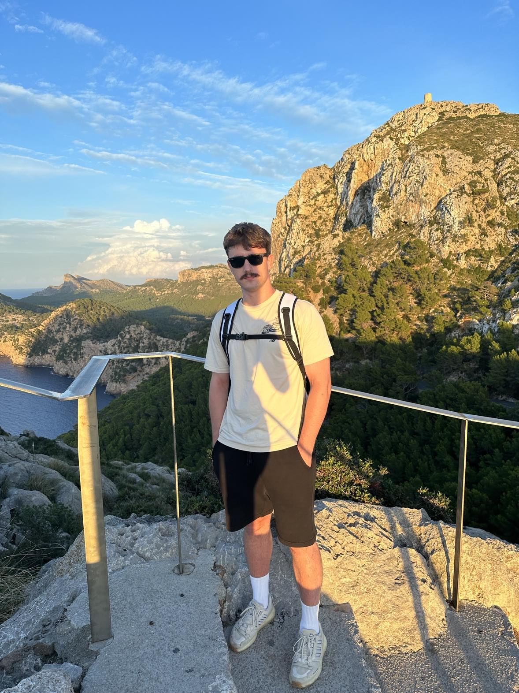

My Resume

mgr inz. Bartosz Matuska
Web Developer
(elMACIORA69turbo)
Summary
I am dynamic and reliable person, eager to learn
and gain experience. I easily estalish Relationschips
and adapts in new environment
Education
- 2015-2018 Liceum Ogolnoksztalcace im. J. Kochanowkiego
- mathematics and physics profile, Zwolen
- 2018-2022 Akademia Gorniczo-Hutnicza
- engineering studies Envitomental Engieer, Krakow
- 2022-2023 Akademia Gorniczo-Hutnicza
- master's degree studies, Envitomental Engieer, Krakow
- 2023-2024 Akademia Gorniczo-Hutnicza
- graduate studies, Hydrogen and biomethanol, Energy Transformation, Krakow
- 2023-2024 Udemy
- The Complete 2023 Web Development Bootcamp, Dr. Angela Yu
Work Experience:
-
PUliDG LIMA Sp. z o.o. - Assistant Designer
07.2020 - 10.2020
- Assistance in the design of medium and high pressure gas networks,
- Performing mechanical calculations of gas networks,
- calculating the thermal energy requirements of buildings,
- making drawings of projekct documentation
- meetings with investors and owners in the field
- creating documents
- completing projects
-
Freelance, gas infrastructure projects
10.2020 - now
- making individual projects of installations and gas connections
-
Freelance, IT Developer Support
02.2023 - now
-
Grupa-Projekt Sp. z o.o. - Assistant Designer
06.2021-07.2022
- Carrying out pressure and strenght calculations sanitary and thermal installations
- Support of designers in preparation of drawings in the field of plumbing and gas installations, cental heating and ventilation
- Meetings with owners and investors in the field
- Taking measurements at the investment site
-
OTS-IP Sp. z o.o. - Senior Assistant Designer
07.2022-now
- Creation of 3d models of objects and fittings,
- Configuration of Autodesk Plant 3d software as a Plant Administrator,
- Support of designers in obtaining information of geodetic databases,
- Development of pressure-strenght calculations of industrial piping systems,
- Preparation of drawings in the field of gas networks,
- Development of designs of technological facilites high-pressure gas networks - valve assemblies and gas stations,
Skills:
- Autocad
- Autodesk Plant
- BIM
- Microsoft Office
- GIS
- Python
- HTML:
- Java
- C#
- CSS
Certifications:
- B2+ Certificate in Englisch Language
- The Complete 2023 Web Development Bootcamp, Dr. Angela Yu
Others
Contact Me
My Hobbies
Favoururite Dog